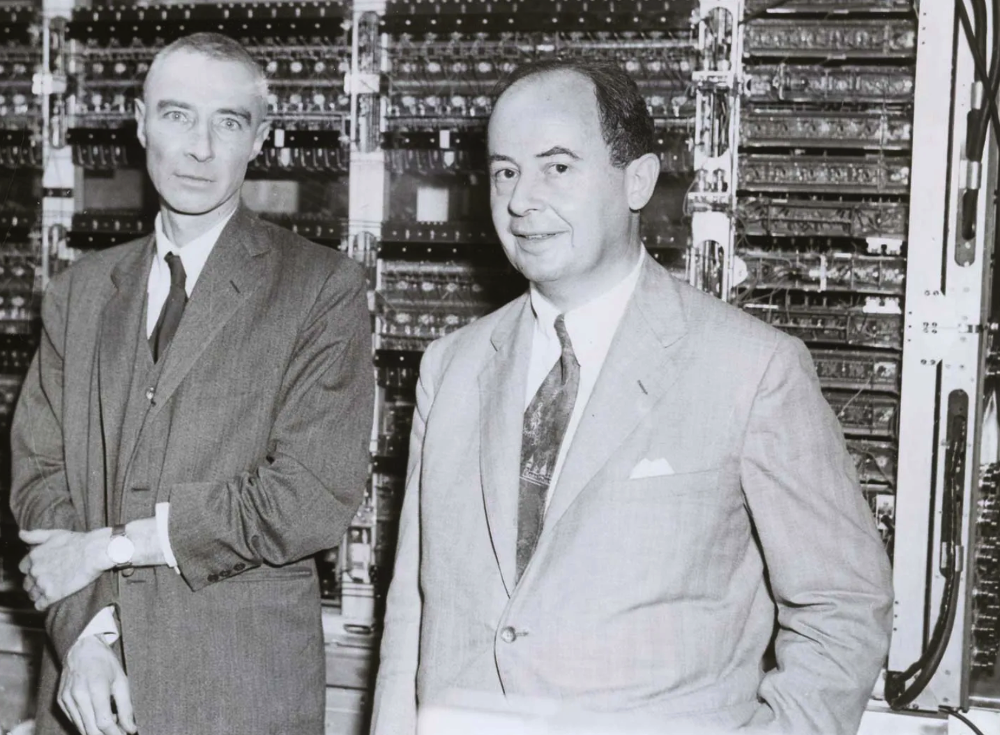
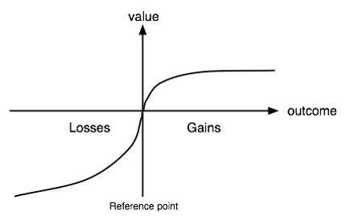
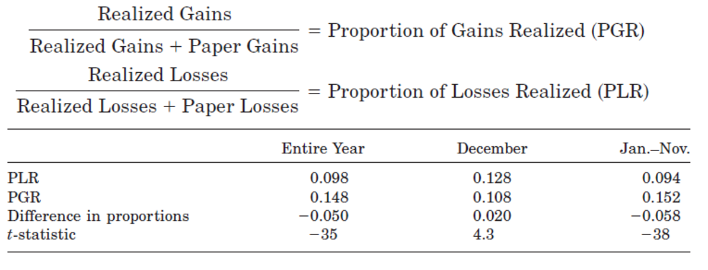
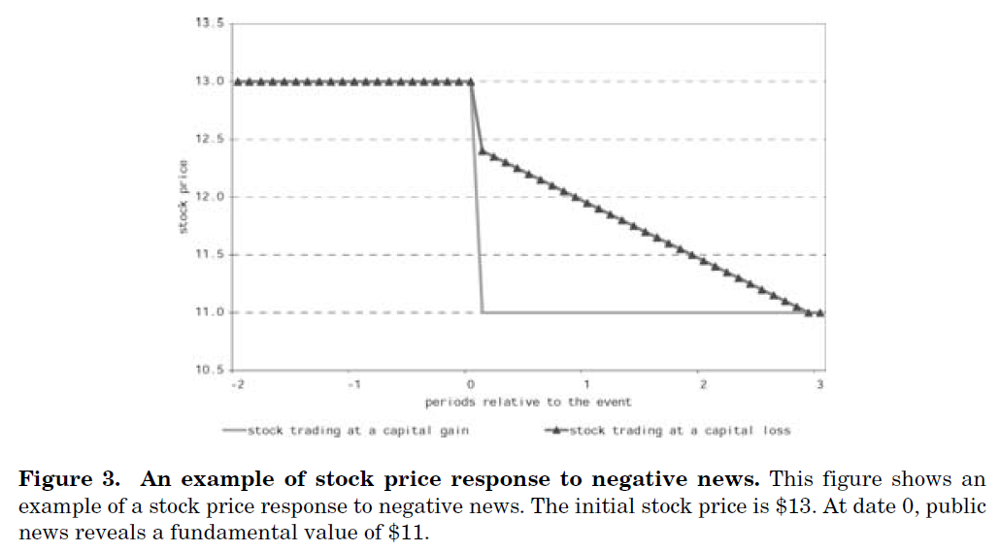
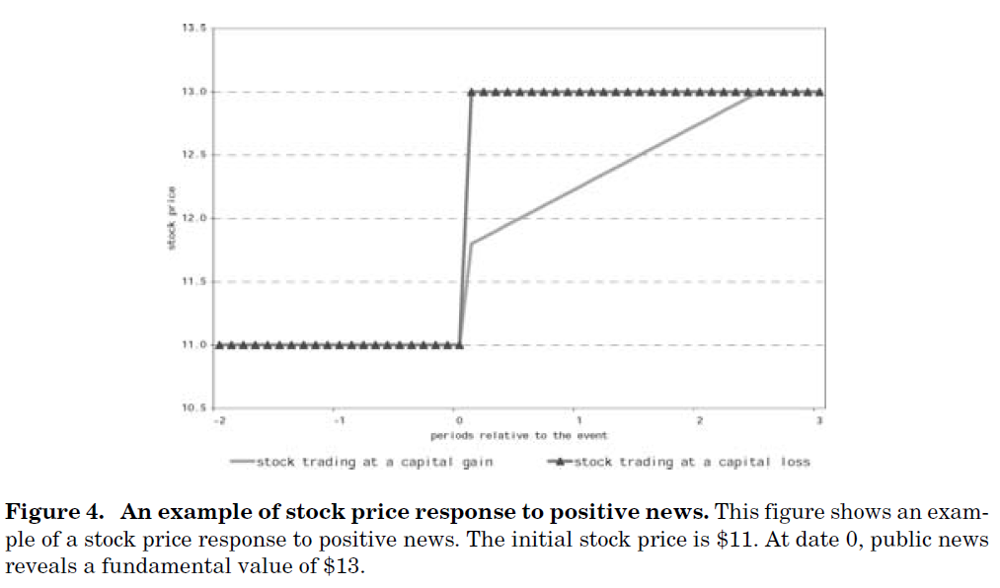

Lecture 2:
Introduction to Behavioral Finance & Decision-Making Under Uncertainty
Neoclassical Economics and Finance
When we talk about behavioral finance, we are comparing to theories in neoclassical economics and finance (that you learn in most other courses).
It is important to understand the “benchmark” or the “target” of behavioral finance, that is, neoclassical economics and finance theories to understand where behavioral finance comes from.
Classical Finance Benchmark
In standard neo-classical economics, researchers usually assume that people are rational.
What does it mean to be “rational”?
Rationality has three layers:
- People have rational preference across possible outcomes or states of nature.
- Order-preserving preferences, completeness, transitivity.
- People maximize their utility and firms maximize profits under constraints
- People make decisions based on all relevant information
Utility Maximization
Utility function: U(w)
Max U(w) subject to f(w)=c (some constraints)
- w corresponds to endowment. You consume endowment to get utility.
Standard portfolio theory basics
- An investor has initial wealth W_0 to invest in N risky assets and a risk-free asset.
- The investor allocates a fraction x_i of his wealth in asset i (i=1,...,N) and the remaining fraction 1-\sum_{i=1}^N x_i in the risk-free asset.
- The return of asset i is a random variable r_i with expected return E[r_i] and variance \sigma_i^2. The covariance between asset i and asset j is \sigma_{ij}.
- The investor choose weights x_i to maximize the E[U] of his wealth.
- The investor’s wealth at the end of the period is given by:
- W = W_0 \left( 1 + \sum_{i=1}^N x_i r_i + \left(1 - \sum_{i=1}^N x_i\right) r_f \right), rf=risk-free rate.
- The investor’s optimization problem can be formulated as:
- Maximize E[U(W)] subject to \sum_{i=1}^N x_i = 1 and x_i \geq 0 for all i.
- The solution gives the optimal portfolio weights x_i^* that maximize expected utility given their risk preferences and the characteristics of the assets.
Utility Maximization
The solution to the portfolio optimization problem gives us the efficient frontier:

Expected Utility Theory
Developed by John von Neumann and Oskar Morgenstern 
Expected Utility
Risk vs. Uncertainty/Ambiguity
- Risk: measurable random states of outcomes with known probability distribution
- Uncertainty/Ambiguity: random states of outcomes with unknown probability distribution or unknown states
Expected Utility is set up to deal with risk, not uncertainty.
- E[U(w)] = \sum_{i=1}^N p_i U(w_i) = Expected utility
- p_i = probability of state i (i =1...N)
- U(w_i)= Utility of getting outcome w_i in state i
Example of Expected Utility Function
There is a lottery with two possible outcomes:
- Outcome 1: Payoff =100, with probability 40\%
- Outcome 2: Payoff= 200, with probability 60\%
- agent has a log utility: U(w) = \ln(w)
Will this agent prefer this lottery to a payoff of (200 × 0.6 + 100 × 0.4) = 160 without any uncertainty?
E[U(w)] = 0.4 × \ln(100) + 0.6 × \ln(200) = 5.02 <
U(E(w)) = \ln(200 × 0.6 + 100 × 0.4) = 5.08
\rightarrow Therefore, the agent will prefer $160 certain payment than this lottery.
Risk Attitude
Risk Attitude: whether an agent asks for additional compensation of returns for carrying more risks
Certainty equivalent wealth ( CE ): the wealth level that leads agents to be indifferent between the lottery and a certain wealth level: E[U(w)] = U(CE)
In the previous example, U(CE) = E[U(w)]= 5.02 hence, CE=151.41
- Risk Averse: E[U(w)] < U(E[w]); or CE < E[w]; or concave utility
- Risk Seeking: E[U(w)] > U(E[w]); or CE > E[w]; or convex utility
- Risk Neutral: E[U(w)] = U(E[w]); or CE = E[w]; or linear utility
Utility Function
Risk Averse:
- E[U(w)] < U(E[w])
- CE < E[w]
RP stands for Risk Premium
- ⇒ RP=E(W)-CE.
- When RP is positive, it means that this person dislike risks. She requires an additional payoff to take risk.
Let’s revise the previous graph with numbers
What is the \textcolor{red}{red\; dot}?
- Imagine that you draw a straight line between U(W_0) and U(W_1) (starting from the curved line). It is the average using 0.40 and 0.60 as weights.
The y-axis value for the \textcolor{red}{red\; dot} and \textcolor{green}{green\; dot} is equal to:
- E(U(W))=0.40\ln(100)+0.60\ln(200)=5.02
y-axis value for the \textcolor{blue}{blue\; dot} is
- U(E(W))=\ln(0.40\times100+0.60\times200)=5.08
x-axis value for the \textcolor{green}{green\; dot} is
- the inverse of E(U(W)), i.e., \exp(5.02)=151.41
Utility Function
Risk Seeking:
- E[U(w)] > U(E[w])
- CE > E[w]
- What kind utility function is this? E.g., w^2 or w^{1.5}
- The risk premium in this case negative. That persons likes to take risks and is willing to pay to to enjoy the risk.
Utility Function
Risk Neutral:
- E[U(w)] = U(E[w])
- CE = E[w]
- Someone that is indifferent to risk. Only cares about the expected return.
Violations of Expected Utility Theory and its Implication in Financial Market
- Allais paradox
- Prospect theory
- Framing
- Special type of Framing: Mental accounting
Violations of Expected Utility Theory: Allais Paradx
Developed by Maurice Allais in 1953
Experiment 1: Which lottery do you prefer?
Lottery A: Get $1M for sure.
Lottery B: Get $0 with prob. 1%, $1M with prob. 89%, and $5M with prob. 10%.
Experiment 2: Which lottery do you prefer?
Lottery A: Get $0 with prob. 89%, get $1M with 11% prob.
Lottery B: Get $0 with prob. 90%, get $5M with 10% prob.
Allais Paradox
In the first experiment, most people choose A, which means:
U(1, 000, 000) > 0.89U(1, 000, 000) + 0.1U(5, 000, 000) if U(0) = 0
Organize this expression, we get:
0.11U(1, 000, 000) > 0.1U(5, 000, 000)
Allais Paradox
In the second experiment, most people choose B, which means:
0.11U(1, 000, 000) < 0.1U(5, 000, 000)
Did you notice the preference sign flipping from > in A to < in B?
This contradicts the previous results!
Violations of Expected Utility Theory(2): Prospect Theory
Developed by Daniel Kahneman and Amos Tversky

Prospect Theory
Experiment 3: Choose one lottery that you prefer
A: you get $250 for sure;
B: you get $0 with probability 75%; and you get $1000 with probability 25%.
Experiment 4: Choose one lottery that you prefer
A*: you lose $750 for sure;
B*: you lose $1000 with probability 75% and you lose nothing with probability 25%
Prospect Theory
Experiment 3: Choose one lottery that you prefer
A: you get $250 for sure;
B: you get $0 with probability 75%; and you get $1000 with probability 25%.
Experiment 4: Choose one lottery that you prefer
A*: you lose $750 for sure;
B*: you lose $1000 with probability 75% and you lose nothing with probability 25%
Observation 1: People tend to sometimes exhibit risk aversion and sometimes exhibit risk seeking, dependent on the nature of the prospects.
Prospect Theory
Experiment 5.A: Suppose that you have $300 in your pocket. Choose one lottery that you prefer:
A: you get $100 for sure;
B: you get $0 with probability 50%; and you get $200 with probability 50%;
Experiment 5.B: Suppose that you have $500 in your pocket. Choose one lottery that you prefer:
A: you lose $100 for sure;
B: you lose nothing with probability 50%; and you lose $200 with probability 50%;
Prospect Theory
Experiment 5.A: Suppose that you have $300 in your pocket. Choose one lottery that you prefer:
A: you get $100 for sure;
B: you get $0 with probability 50%; and you get $200 with probability 50%;
Experiment 5.B: Suppose that you have $500 in your pocket. Choose one lottery that you prefer:
A: you lose $100 for sure;
B: you lose nothing with probability 50%; and you lose $200 with probability 50%;
Observation 2: People’s valuation of prospects depend on gains and losses relative to a reference point.
Prospect Theory
Experiment 6: What value of x would make you indifferent in choosing between lotteries A and B?
A: you get nothing with probability 100%;
B: you get x with probability 50% and you lose $25 with probability 50%.
Prospect Theory
Experiment 6: What value of x would make you indifferent in choosing between lotteries A and B?
A: you get nothing with probability 100%;
B: you get x with probability 50% and you lose $25 with probability 50%.
Observation 3: People are particularly averse to losses because losses loom larger than gains.
Prospect Theory
Experiment 7a: You purchased a stock for $50 and it is now selling at $40. You have a paper loss of $10 per share. In the next period, it is equally likely that it will increase or decrease by $10. Would you:
- Sell the stock and realize a $10 loss?
OR
- Hold on for a 50/50 shot at another loss or breaking even?
Prospect Theory
Experiment 7b: You purchased a stock for $50 and it is now selling at $60. You have a paper gain of $10 per share. In the next period, it is equally likely that it will increase or decrease by $10. Would you:
- Sell the stock and realize a $10 gain?
OR
- Hold on for a 50/50 shot at another gain or breaking even?
Prospect Theory
Experiment 7b: You purchased a stock for $50 and it is now selling at $60. You have a paper gain of $10 per share. In the next period, it is equally likely that it will increase or decrease by $10. Would you:
- Sell the stock and realize a $10 gain?
OR
- Hold on for a 50/50 shot at another gain or breaking even?
Observation 4: Losers become more willing to take on risk in an attempt to break even. This finding is thank to Richard Thaler.
Prospect Theory
People give a much higher weight on probability changes in extremes (e.g., close to 0% or 100%) relative to probability changes in normal ranges;
Example 1: A patient is willing to pay much more if a medication can change the probability of full recovery from no chance to 1% vs. from 50% to 51%.
Example 2: In Canada, the probability of winning a big lottery is 1 in 13,983,816; you are more likely to:
- Be killed in a terrorist attack while travelling (1 in 650,000).
- Be killed by lightning (1 in 56,439).
Prospect Theory
People give a much higher weight on probability changes in extremes (e.g., close to 0% or 100%) relative to probability changes in normal ranges;
Example 1: A patient is willing to pay much more if a medication can change the probability of full recovery from no chance to 1% vs. from 50% to 51%.
Example 2: In Canada, the probability of winning a big lottery is 1 in 13,983,816; you are more likely to:
- Be killed in a terrorist attack while travelling (1 in 650,000).
- Be killed by lightning (1 in 56,439).
Observation 5: People overweight extreme probabilities and underweight normal probabilities.
Prospect Theory - Value Functions and Their Weights
Kahneman and Tversky (1979): Prospect utility is developed to reconcile the violations of expected utility theory.
Value function: prospect utility function
- U(x)= \sum_{i=1}^N w(p_i) v(x_i)
- where x is a state-dependent payoff.
- w(.) is the weight function so that
- v(.) is the value function, it is convex when x<0 and concave when x>0.
The key insights of prospect theory:
- assign higher weight on low-probability event when the payoff is negative;
- assign higher weight on certainty when the payoff is positive;
- assign higher weight when the probabilities are close to extremes.
Prospect Theory
Value functions and their weights

Prospect Theory in Sports
Prospect theory says that losses hurt more than gains. Let’s apply this thinking to sport coaches …
- In hockey, if down by one goal, coaches usually pull out the goalie for an extra attacker with 1 or 2 minutes left.
- Research shows that it is optimal based on the probabilities for a coach to pull the goalie when there is 6 minutes left in the game.
- Doing so, it would increase the expected number of points at the end of the season by 3 points. Might sound small, but enough for many teams to make the playoffs.
- Why are coaches not more tempted to pull goalies earlier in the game?
Prospect Theory in Sports
- Say that you are down 0-1, and you pull the goalie with 6 min left and lose 0-5, does the coach looks stupid? Yes, to many that don’t understand probabilities. A coach prefers to lose 0-1 or 0-2 than 0-5. The coach looks more credible, more likely to keep is job.
- If a coach plays the probabilities, he might look wild, increase the likelihood to get fired, even though he makes the right choice.
- Hence, the psychological reflexion in the mind of the coach is that being scored by pulling the goalie to early hurts more (loss) than actually scoring and tie the game (gain).
- The same can be said for 4^{th} down play in football.
Implications of Prospect Theory to Financial Market
- The disposition effect
- Odean (1998)
- Frazzini (2006)
- Equity risk premium puzzle
- Benartzi and Thaler (1995)
Disposition Effect
The disposition effect is the tendency of individual investors to sell assets whose price has increased and keep assets that have dropped in value;
- A direct implication of the prospect theory.
- This is puzzling. Stocks that have recently done well continue to outperform, on average, while those that have done poorly continue to underperform. As such, investors should concentrate their selling among stocks with poor past performance—but they do the opposite.
Disposition Effect
Why is this related to prospect theory?
The intuition is that, if a stock performs poorly (great), this brings its owner in to the loss (gain) stock region of the value function, where, because of the convexity (concavity), the owner becomes risk-seeking (risk-averse). As a result, investor holds on to (sells) the stock in the hope of breaking even later on.
Are Investors Reluctant to Realize Their Losses? (Odean, 1998)
Terry Odean examines the disposition effect, the tendency of investors to hold losing investments too long and sell winning investments too soon, by analyzing trading records for 10,000 accounts at a large discount brokerage house.
Definitions:
- Realized gain (losses) is your return after selling the asset.
- Paper gain (losses) is your return that is not yet realized, i.e., you haven’t sold the asset yet.
Findings:

- Investors hold winning stocks for 102 days and losing stocks for 124 days..
- Why look at December separately?
Bonus: Recent interview with Terry Odean
Terry explains his research since 1998 in this interview
Disposition Effect
The “disposition effect” is the tendency to sell assets that have gained value (‘winners’) and keep assets that have lost value (‘losers’).
Bonus: Original study that coined the term “disposition effect”
The Disposition Effect and Underreaction to News
If you recall from the first class, I showed you a plot of price underreaction to earnings announcements. In the paper titled “The Disposition Effect and Underreaction to News”, Frazzini (2006) proposes that the disposition effect can explain (in part) such finding.
- Frazzini has a “reference price”, which is the aggregate price at which mutual funds paid for a particular stock on each month and examines whether prices underreact more to news (earnings announcements) if the stock price is in capital gain or losses.
- Let’s examine the theoretical arguments of Frazzini followed by its empirical exercise.
Theoretical findings

Prefer not to “not sell” because .5U(50) + .5U(30) > U(40) since U is a convex function.
Theoretical findings

Prefer to “sell” because .5U(50) + .5U(70) < U(60) since U is a concave function.
Implications to bad earnings news
Why a slow price drift for capital loss? Because following a negative news, people are not selling, limiting the the speed at which the price reaches its new equilibrium value.
Implications to good earnings news
Why slow price drift for capital gain? Because following a positive news, people are selling, selling puts a downward pressure on the price limiting the speed at which the price reaches its new equilibrium value.
Main empirical findings of Frazzini (2006)
Frazzini confirms his hypothesis empirically. He first calculates capital gains (losses) overhang as the percentage deviation of the aggregate cost basis from the current price:
g_t = \frac{p_t − rp_t}{p_t}
where p_t is the current price and rp_t is the reference price of the aggregate investor calculated from mutual fund holdings. Think about it as the “mental” gain (or loss).
He then examines on each month, based on the previous earnings announcement news (at t-1, t-2 or t-3), if the monthly price on month t, month t + 1, and so on show price drifts consistent with the figures on the previous slides and he does.
Violations of Expected Utility Theory(3): Framing

Framing - Experiment
(Group Left) Experiment 1: Imagine that Canada is preparing for an unusual disease, which is expected to kill 600 people. Two alternative plans, A and B, are proposed to combat the disease. The consequences of two plans are provided as follows:
- Plan A: 200 people will be saved for sure;
- Plan B: there are 1/3 probability that all 600 people will be saved and 2/3 probability that none will be saved;
If you are the Prime Minister, which one will you choose?
Framing - Experiment
(Group Right) Experiment 2: Imagine that Canada is preparing for an unusual disease, which is expected to kill 600 people. Two alternative plans, A and B, are proposed to combat the disease. The consequences of two plans are provided as follows:
- Plan A*: 400 people will die for sure;
- Plan B*: there are 1/3 probability that nobody will die and 2/3 probability that all 600 people will die.
If you are the Prime Minister, which one will you choose?
Framing - Experiment
Take a careful look at Experiment 8 and Experiment 9, what do you see?
- They are essentially the same!
- Then why we have so different choices?
A decision frame is defined to be a decision maker’s view or perception of the problem and possible outcome.
In Experiments 8 and 9 we show that the decisions can be affected by different framing of a same question.
- Therefore, the way we present information matters!
- It is a clear violation of expected utility theory, which states that same probability distribution and same state-dependent outcomes lead to the same level of utility.
Framing
Tversky and Kahneman refer to framing as choices made by agents that depend on the way a problem is posed as much as on the objective features of a problem.
- With a traditional economic theory framework, framing cannot alter behavior!
How to manipulate your audience
In general, the way we frame a problem or a question can illicit the behavior we want from someone (i.e., manipulation).
For instance, regarding COVID, Trump framed the issue as “save the economy or lock everything down” - as if it was a binary decision. A good strategy to fire up its base!
Binary framing is often suboptimal. It masks the possibility of other alternatives, or pursuing one decision in some places or situations and a different one in others.
A Special Type of Framing: Mental Accounting
Mental Accounting is a set of cognitive operations used by individuals to organize, evaluate and keep track of financial activities.
- I.e., Different items are categorized and “recorded” in different accounts.
- Concept develop by Richard Thaler (1985) - see original study in Marketing Science and for a general overview the following study.
Mental Accounting: Different scenarios (Thaler, 1985)
Mr. and Mrs. L and Mr. and Mrs. H went on a fishing trip in the northwest and caught some salmon. They packed the fish and sent it home on an airline, but the fish were lost in transit. They received $300 from the airline. The couples take the money, go out to dinner and spend $225. They had never spent that much at a restaurant before.
Mr. X is up $50 in a monthly poker game. He has a queen high flush and calls a $10 bet. Mr. Y owns $100 shares of IBM which went up to 50% today and is even in the poker game. He has a king high flush but he folds. When X wins, Y thinks to himself, “If I had been up $50 I would have called too.”
Mental Accounting: Different scenarios (Thaler, 1985)
Mr. and Mrs. J have saved $15,000 toward their dream vacation home. They hope to buy the home in five years. The money earns 10% in a money market account. They just bought a new car for $11,000 which they financed with a three-year car loan at 15%.
Mr. S admires a $125 cashmere sweater at the department store. He declines to buy it, feeling that it is too extravagant. Later that month he receives the same sweater from his wife for a birthday present. He is very happy. Mr. and Mrs. S have only joint bank accounts.
Mental Accounting: Different scenarios (Thaler, 1985)
All the examples on the previous slide is a clear violation of expected utility theory since whether items are in the same account or different accounts should be irrelevant in expected utility theory.
- In (1), it violates the principle of fungibility. Money is not supposed to have labels attached to it. Yet, they treat the $300 into a “windfall” and “food” account. If, instead, they get a $300 increase in their monthly salary, do you think they would have gone to that expensive restaurant?
Mental Accounting: Different scenarios (Thaler, 1985)
All the examples on the previous slides is a clear violation of expected utility theory since whether items are in the same account or different accounts should be irrelevant in expected utility theory.
In (1), it violates the principle of fungibility. Money is not supposed to have labels attached to it. Yet, they treat the $300 into a “windfall” and “food” account. If, instead, they get a $300 increase in their monthly salary, do you think they would have gone to that expensive restaurant?
In (2), it also violates the principle of fungibility (there shouldn’t be a distinction between your poker and investment money account).
Summary
We review the neoclassical utility functions and the notions of risk attitude;
We review the expected utility theory;
We discuss the Allais Paradox and show the following violations of expected utility theory
- Prospect utility
- Framing and mental accounting